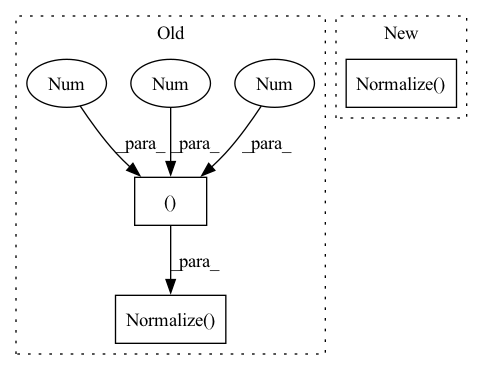

Pattern ID :21160

Before Change
if label_path is not None:
self.labels = pd.read_csv(label_path, index_col=["image_name"])
mean = (0.5, 0.5, 0.5)
std = (0.5, 0.5, 0.5)
// transforms
self.transform = transforms.Compose([
// transforms.RandomRotation(10),
// transforms.Resize((32,32)),
// transforms.ColorJitter(0.2, 0.2, 0.2, 0.01),
// transforms.RandomAffine(degrees=0, translate=(0.2, 0.2), shear=0.2),
// transforms.RandomHorizontalFlip(),
transforms.ToTensor(),
transforms.Normalize(mean, std)
])
def __getitem__(self, idx):
image_file = self.filenames[idx]
After Change
// transforms.RandomAffine(degrees=0, translate=(0.2, 0.2), shear=0.2),
// transforms.RandomHorizontalFlip(),
transforms.ToTensor(),
transforms.Normalize(mean=[0.485, 0.456, 0.406],
std=[0.229, 0.224, 0.225]),
])
def __getitem__(self, idx):
In pattern: SUPERPATTERN
Frequency: 3
Non-data size: 3
Instances
Fragment ID: 67823066
Project Name: deeperlearner/pytorch-template
Commit Name: 8702b11c6f671220c5f60b4b15d4d1eaa35c42ef
Time: 2021-04-17
Author: b04202035@g.ntu.edu.tw
File Name: data_loaders/data_loader.py
M Class Name: MyDataset
N Class Name: MyDataset
M Method Name: __init__(4)
N Method Name: __init__(4)
M Parent Class: Dataset
N Parent Class: Dataset
M File Name: data_loaders/data_loader.py
N File Name: data_loaders/data_loader.py
M Start Line: 22
M End Line: 32
N Start Line: 31
N End Line: 32
'>
Before Change
transforms.RandomApply([Solarization()], p=solarization_prob),
transforms.RandomHorizontalFlip(p=horizontal_flip_prob),
transforms.ToTensor(),
transforms.Normalize((0.4914, 0.4822, 0.4465), (0.247, 0.243, 0.261)),
]
)
After Change
transforms.RandomApply([Solarization()], p=solarization_prob),
transforms.RandomHorizontalFlip(p=horizontal_flip_prob),
transforms.ToTensor(),
transforms.Normalize(mean, std),
]
)
'>
Fragment ID: 67823067
Project Name: vturrisi/solo-learn
Commit Name: 0ac7b8f639a1324a41caba8afe2078bad506c82d
Time: 2021-12-01
Author: enrico.fini@gmail.com
File Name: solo/utils/pretrain_dataloader.py
M Class Name: CifarTransform
N Class Name: CifarTransform
M Method Name: __init__(14)
N Method Name: __init__(13)
M Parent Class: BaseTransform
N Parent Class: BaseTransform
M File Name: solo/utils/pretrain_dataloader.py
N File Name: solo/utils/pretrain_dataloader.py
M Start Line: 231
M End Line: 231
N Start Line: 178
N End Line: 240
'>
Before Change
if pre_process is None:
pre_process = T.Compose([
T.ToTensor(),
T.Normalize((0.5, 0.5, 0.5), (0.5, 0.5, 0.5))
])
if post_process is None:
post_process = T.Compose([
Denormalize((0.5, 0.5, 0.5), (0.5, 0.5, 0.5)),
After Change
self.device = device
self.pre_process = T.Compose([
T.ToTensor(),
T.Normalize(mean, std)
])
self.post_process = T.Compose([
Denormalize(mean, std),
T.ToPILImage()
'>
Fragment ID: 67823065
Project Name: thuml/transfer-learning-library
Commit Name: b23944c9c0af796efabd737c4c6cd5b8df33897c
Time: 2021-02-28
Author: 13126830206@163.com
File Name: dalib/translation/cyclegan/transform.py
M Class Name: Translation
N Class Name: Translation
M Method Name: __init__(5)
N Method Name: __init__(5)
M Parent Class: nn.Module
N Parent Class: nn.Module
M File Name: dalib/translation/cyclegan/transform.py
N File Name: dalib/translation/cyclegan/transform.py
M Start Line: 33
M End Line: 44
N Start Line: 27
N End Line: 34